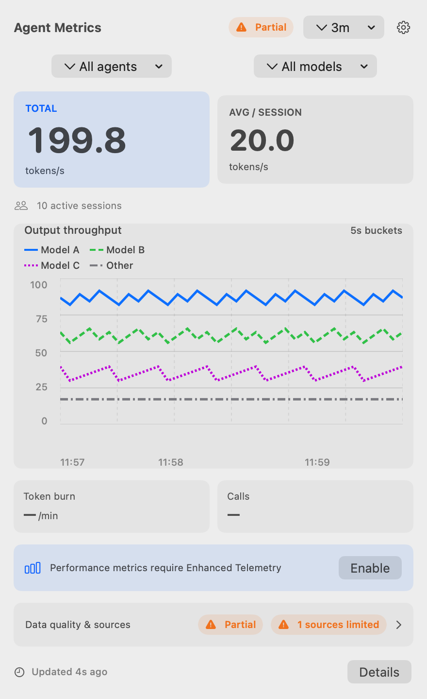
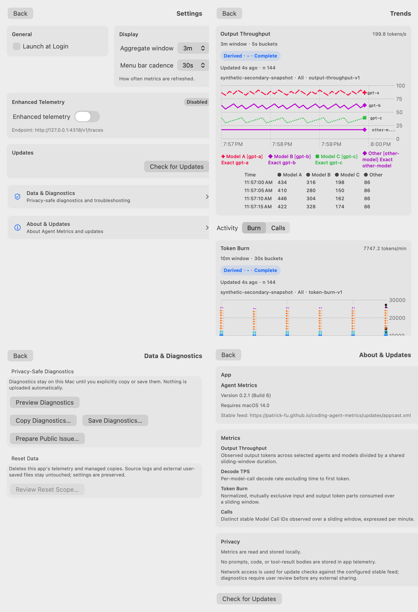

输出吞吐（Output Throughput）
选中来源的输出 token 除以共享的 3、5 或 10 分钟滑动窗口时长；它不是每次调用的 TPS。
原生菜单栏指标 · Public Beta
Agent Metrics 在 macOS 菜单栏中呈现本地 Codex 与 Claude Code 活动；不同口径不会被压成一个分数。
版本 0.2.1 · build 6 · macOS 14+ · Apple silicon

先定义，再展示
选中来源的输出 token 除以共享的 3、5 或 10 分钟滑动窗口时长；它不是每次调用的 TPS。
固定 600 秒窗口内、已经归一化且互斥的 token 部分；它不叫 TPM，也不会把相互重叠的计数相加。
每分钟去重后的稳定 Model Call ID。来源不能提供稳定 ID 时，调用指标会显示不可用而不是猜测。
单次 Model Call 的解码速率，排除首 token 时间。它需要增强遥测，所需字段无法关联时会保持不可用。
趋势详情会同时说明测量质量、数据状态、覆盖度、新鲜度、来源权威性与定义版本。
摘要之外

查看吞吐与活动随时间的变化，并通过精确数值表和指标来源信息理解结果。
清楚地管理聚合窗口、菜单栏刷新频率、登录启动、增强遥测与更新。
预览 allowlist 报告，确认复制或保存操作，并先查看 Reset Data 的准确范围。
集中查看版本、兼容性、指标定义、隐私边界和更新检查。
来自应用浅色与深色外观的确定性真实渲染；数值为合成数据。
来源矩阵
| 来源 | 默认本地数据 | 增强数据 |
|---|---|---|
| Codex | Rollout 使用观测可支持聚合输出与 burn，并带有来源特定覆盖度。 | 可选回环遥测只会在身份和字段可验证时增加请求级观测。 |
| Claude Code | 本地转录支持由版本门控；不可得字段保持不可用。 | 可选回环遥测可提供受支持的请求观测；它并非只面向 Claude Code。 |
增强遥测默认关闭。它的回环接收器未鉴权；仅在信任 Mac 上本地进程时启用。应用不会改动 shell、环境变量或 Coding Agent 配置。
本地存储与控制
Agent Metrics 读取受支持的本地文件，并在本地 SQLite 存储归一化后的使用事实。无需账户或托管分析服务。预期的外部网络活动是针对已配置更新源的自动及用户主动更新检查。
安装
常见问题
无需托管分析服务。自动及用户主动更新检查是预期的外部网络活动；启用增强遥测会创建一个未鉴权的本地回环接收器。
不同来源拥有不同的持久字段与边界。Agent Metrics 会显示缺少的覆盖度，不会以另一种度量偷换。
在 Data & Diagnostics 中可预览、复制、保存允许列表中的诊断信息，或准备公开 issue；查看 Reset Data 的范围后再确认清除。
GitHub prerelease 是 Public Beta 的发布渠道；应用更新 feed 跟随已发布的版本历史。